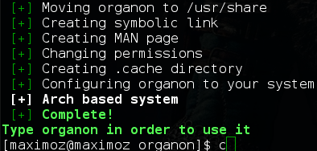

How to Install
Installing
To install Organon, first of all, you must download the program using git clone or downloading the zip file - as you prefer -, once downloaded, enter the main directory and execute the install.sh script, the script will install all the requirements for you automatically.
Care! To run the Organon not need to use root.
Download
As discussed, you can download it directly here or execute the code below.
1 - git clone https://github.com/fnk0c/organon
2 - cd organon
3 - ./install.sh

Tested on
- Debian 7.8 Wheezy
- Debian 8 Jessie
- Elementary OS Luna
- Linux Mint 17.1
- Manjaro 0.8.13
- Ubuntu 14.04 x86_64
- Ubuntu 14.10 x86_64
If you have any problems, please, send a Pull.